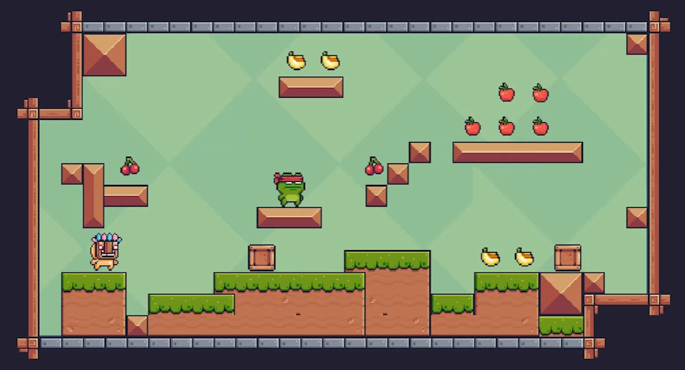
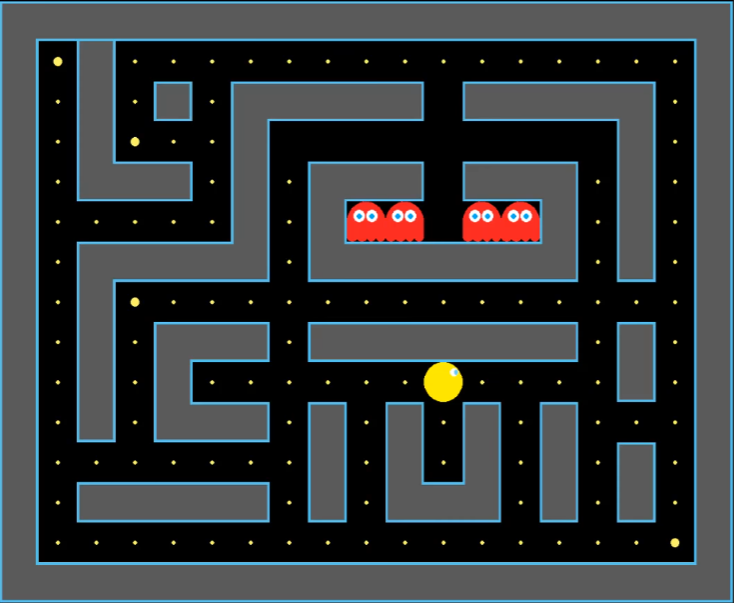

Lucas Couttulenc
Actualmente cursando mi 3er año de de Licenciatura en Análisis de Sistemas, en la UBA
Desde la secundaria me interesó la programación y comencé a hacer mini proyectos. Estos principalmente consistían en simples juegos 2D tales como un clásico juego de plataformas en Unity, o un Pac-Man. Si bien no los programé con lenguajes complejos y los realicé con la ayuda que brinda la aplicación que utilicé para cada uno (además de videos y otros recursos), me sirvieron mucho para sentar las bases de la programación y adentrarme mucho en el mundo del software.

-
Unity
-
C#
